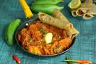

Matoke Recipe

Matoke, also known as Matooke (cooking banana), is a staple food in East Africa made from green bananas
Matoke, also known as Matooke or Ibitoke, is a variety of starchy banana, commonly referred to as cooking bananas. The fruit is harvested green and then cooked and often mashed or pounded into a meal. In Uganda, it is steam-cooked and the mashed meal is one of the national dishes
Matoke Ingredient
- Matoke (green bananas)
- Onions
- Tomatoes
- Garlic
- Ginger
- Cooking oil
- Salt
Steps to Prepare Matoke
- Peel your plantains(Matoke) and place in salty cold water when finished with each piece. This is to avoid them from turning colour before cooking.
- When all pieces are peeled, rinse them and in a suitable sufuria, boil them for about 10 minutes or until they are cooked but still firm when you stick a small knife into a piece.
- Set aside to cool when done
- Cook the onion with little oil and allow to brown slightly then add the diced tomatoes, chili flakes and carrots to cook until they become soft. Add little water to avoid from sticking to the Surface.
- When the carrots are cooked, add the cooked plantains, green peppers and the cooked peas and give a good stir.
- Add hot water and allow to simmer for about 2 minutes.
- In the meantime dissolve the Royco Mchuzi Mix in a cup with little cold water and make sure to stir completely before pouring it in the simmering stew.
- Stir and allow to simmer for a final two minutes to make the gravy thick and full bodied, taste and adjust the salt if necessary.
- Add the chopped dhania at the very end, stir and turn off the heat.
- Serve hot as a meal or with a small portion of meat and a side of your favourite greens on the side.